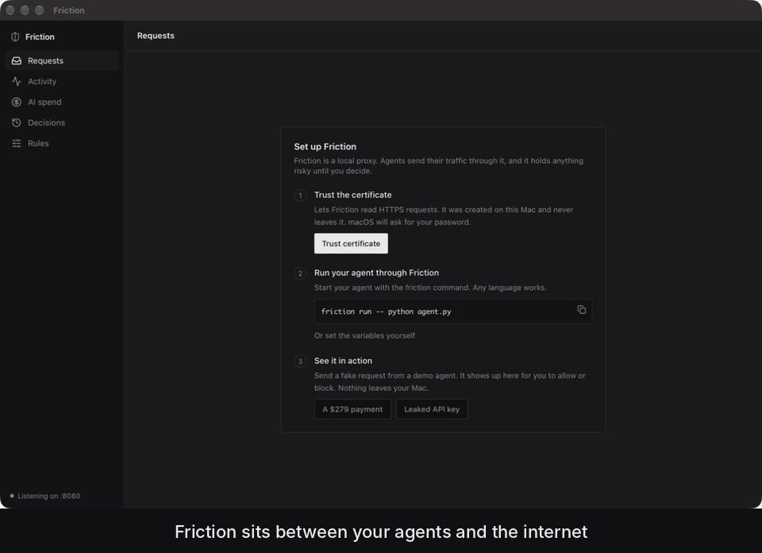

Ask before your AI agent spends money
Friction is a macOS menu bar app with a local proxy for AI agents. It holds payments and leaked API keys until you say yes, caps what agents spend on AI APIs, and records every request they make.
brew install --cask shabfom/tap/friction
friction run -- python agent.py
Payments wait for you
Stripe, PayPal, Square, Adyen, Coinbase and more are held with the amount read from the request. Allow with ⌘↩, block with ⌘⌫.
Keys stay home
An API key headed anywhere but its own service is held. Your Anthropic key to Anthropic is fine; in a pastebin upload it isn't.
Spend has a ceiling
Token counts are read from every AI response, streamed or not. Set a daily cap overall or per agent.
Everything is on the record
Every request with headers, bodies, timing and cost. Export to HAR for DevTools, Charles or Proxyman.
Everything runs on your Mac: no account, no cloud, no telemetry. HTTPS inspection uses a certificate generated on your machine that never leaves it. Friction covers programs that use its proxy, which friction run sets up for you.
Free and MIT licensed. macOS 11 or later, Apple Silicon and Intel.